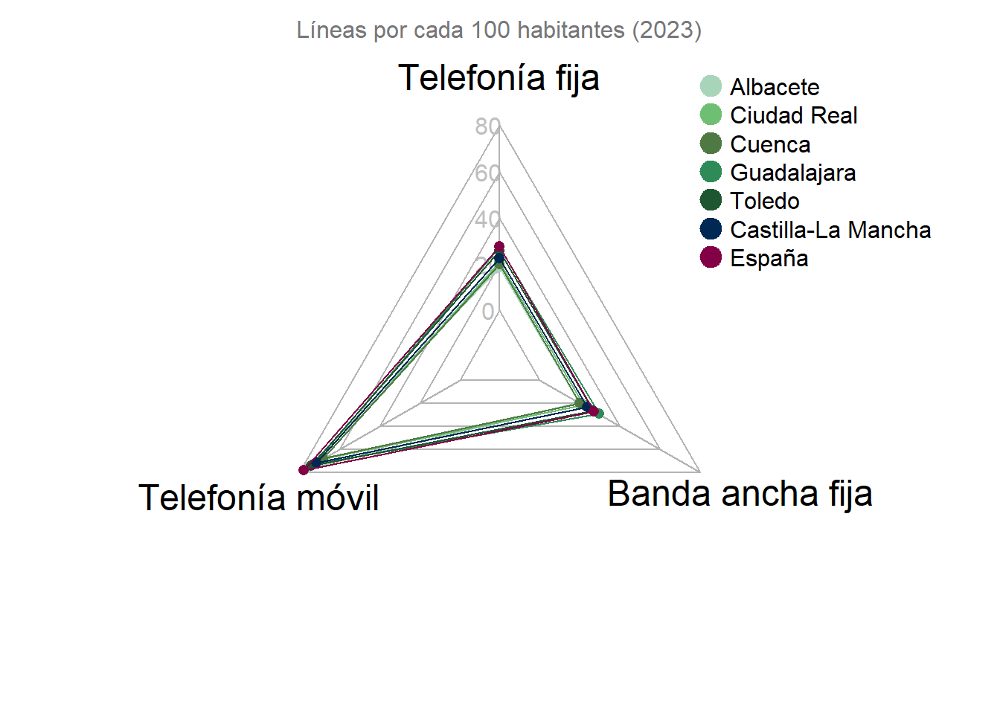

| Sector | Gasto | Porcentaje |
|---|---|---|
| Empresas | 190075 | 57.11 |
| Enseñanza superior | 91150 | 27.39 |
| Adm. Públicas | 51041 | 15.34 |
| IPSFL | 565 | 0.17 |
| Total | 332831 | 100.00 |
1 Ciencia y tecnología
ü§î ¬øSab√≠as que ‚Ķ?
- En 2023, CLM invirtió más de 330 millones de euros en I+D. El sector empresarial recibió más de la mitad de estos fondos.
- En CLM hay casi tantos móviles como habitantes. ¡Más de 98 líneas por cada 100 personas!
- Prácticamente todas las empresas de CLM tienen internet, pero apenas el 8 % usan inteligencia artificial (IA).
1.1 La inversión en I+D
CLM destinó más de 330 millones de euros a investigación y desarrollo (I+D) en 2023
Eso equivale al 1,5 % del total nacional, una inversión que impulsa la innovación desde empresas, universidades y administraciones públicas.
El sector empresarial recibe más de la mitad de la inversión en I+D
En 2023, las empresas absorbieron el 57,1 % de la inversión total en I+D, muy por delante de la enseñanza superior (27,4 %) y las administraciones públicas (15,3 %).
El 42 % del personal en I+D en CLM son mujeres
En CLM, la I+D no solo se hacen en laboratorios universitarios o centros públicos. En 2023, casi 4.000 personas trabajaron en I+D a jornada completa (EJC) en la región y el 45 % de ellas lo hicieron desde el sector empresarial, que lidera el esfuerzo humano en innovación.
Le siguen las universidades, con un 36,2 %, y las administraciones públicas, con un 18,1 %.
Las mujeres representan el 42 % del personal dedicado a I+D en CLM, una cifra que muestra el papel cada vez más relevante de las investigadoras en el ecosistema científico regional.
Las mujeres en CLM representan, aproximadamente, el 42 % del personal total en EJC
CLM innova por encima de la media
Las empresas de CLM que invierten en innovación y en actividades de I+D lo hacen con más intensidad que la media española. En 2022, la región superó a España en dos de los tres indicadores clave de innovación, medidos como el porcentaje que representan los gastos en innovación sobre la cifra de negocios

1.2 El desigual mapa de la conectividad en CLM
Guadalajara y Toledo, líderes en telefonía fija y banda ancha
Aunque CLM avanza en conectividad digital, no todas sus provincias están al mismo nivel. Un análisis de los servicios de telecomunicaciones revela fuertes contrastes territoriales: Guadalajara y Toledo destacan por su buen desempeño en telefonía fija y banda ancha, mientras que otras zonas aún tienen margen de mejora.
Con más de 98 líneas móviles por cada 100 habitantes, CLM avanza en conectividad
Sin embargo, a pesar de este buen dato, la comunidad todavía se sitúa por debajo de la media nacional en infraestructura digital, lo que señala que aún hay margen para seguir mejorando en el acceso y calidad de las telecomunicaciones.

Toledo lidera el despliegue de redes de nueva generación (Next Generation Access, NGA) en CLM
CLM sigue avanzando en infraestructura digital: ya representa el 4,6 % del total nacional en redes de nueva generación.
La región cuenta con 3,9 millones de accesos NGA instalados, lo que la sitúa en una posición relevante dentro del despliegue tecnológico en España.
Pero no todas las provincias están igual de conectadas. Toledo es líder con casi 1,3 millones de accesos, mientras que Cuenca apenas tiene medio millón.
1.3 Empresas conectadas, pero poco digitalizadas
La paradoja digital de las empresas en CLM: alta conectividad, baja IA
En CLM, la conectividad básica está prácticamente garantizada: el 98,8 % de las empresas tiene acceso a Internet y el 99,7 % dispone de ordenadores.
Sin embargo, solo la mitad del personal los utiliza en su trabajo diario, lo que revela un uso limitado de las herramientas digitales.
Ocho de cada diez empresas tienen página web, pero la adopción de tecnologías más avanzadas sigue siendo baja:
- Solo el 21,2 % realiza analítica de datos internamente.
- Apenas el 7,6 % utiliza IA.
El teletrabajo no despega en CLM
Aunque la tecnología está cada vez más presente en las empresas, solo el 5,95 % de las personas trabajadoras en CLM teletrabaja de forma regular.
Mujeres en tecnología, por encima de la media
En las empresas de CLM que cuentan con personal especializado en TIC, el 45,9 % son mujeres, superando el promedio estatal del 41,9 %.
| Indicador | CLM (%) | España (%) |
|---|---|---|
| Empresas que emplean especialistas en TIC(i) | 8.48 | 15.67 |
| Empresas con mujeres especialistas TIC(iii) | 45.92 | 41.92 |
| Porcentaje de personal especialista TIC sobre el total de personal | 1.27 | 4.49 |
| Note: | ||
| (i) Porcentaje sobre el total de empresas; (ii) Porcentaje sobre el total de empresas con conexión a Internet; (iii) Porcentaje sobre el total de empresas que emplean especialistas en TIC |